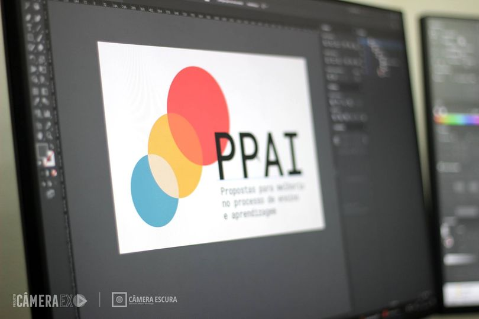
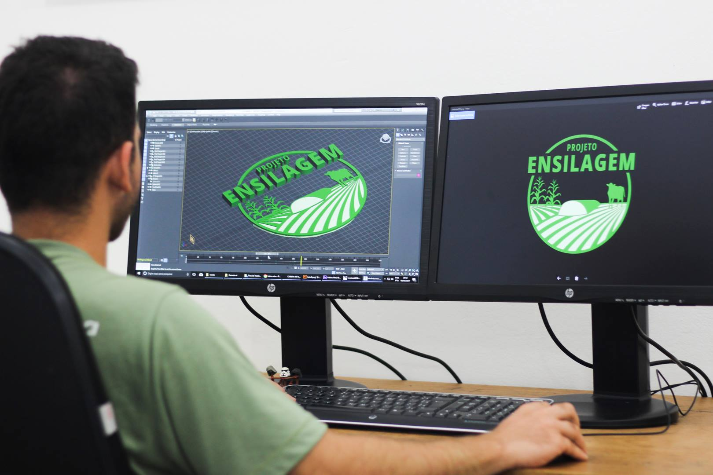

Data: 16 de agosto de 2023
Local: Instituto Federal de Educação, Ciência e Tecnologia de Rondônia (IFRO) - Campus Colorado do Oeste
No dia 16 de agosto, tive a oportunidade de participar de uma visita técnica ao Instituto Federal de Educação, Ciência e Tecnologia de Rondônia (IFRO) - Campus Colorado do Oeste. Durante a visita, pude explorar diversas áreas e projetos interessantes que estão em andamento no campus, conhecer os setores e interagir com os responsáveis por essas atividades.
Durante a visita, fui conduzida por um guia pelo campus, visitando diversos setores e instalações. Tive a chance de conhecer as salas de aula, laboratórios e espaços estudantis, obtendo uma visão abrangente das operações do campus. A equipe do IFRO Colorado do Oeste foi extremamente acolhedora e prestativa, compartilhando informações detalhadas sobre os cursos, programas de pesquisa e projetos em andamento.
A visita técnica ao IFRO Campus Colorado do Oeste foi uma experiência enriquecedora e informativa. Pude compreender a dinâmica do campus, conhecer projetos inovadores e interagir com uma equipe comprometida com a educação e o desenvolvimento local. A diversidade de atividades e o empenho demonstrado por todos os envolvidos refletem o compromisso do IFRO Colorado do Oeste em proporcionar uma educação de qualidade e impactar positivamente sua comunidade.
 Na imagem, é possível observar a produção da identidade visual do projeto "Propostas para Melhoria no Processo de Ensino-Aprendizagem no IFRO - Campus Colorado do Oeste", evidenciando o engajamento e dedicação da equipe do IFRO na busca por melhores práticas educacionais.
Agradeço ao IFRO Campus Colorado do Oeste por ter nos proporcionado a experiência incrivel dessa visita tecnica e agradeço aos professores do IFRO Campus Vilhena, que fizeram a visita acontecer.